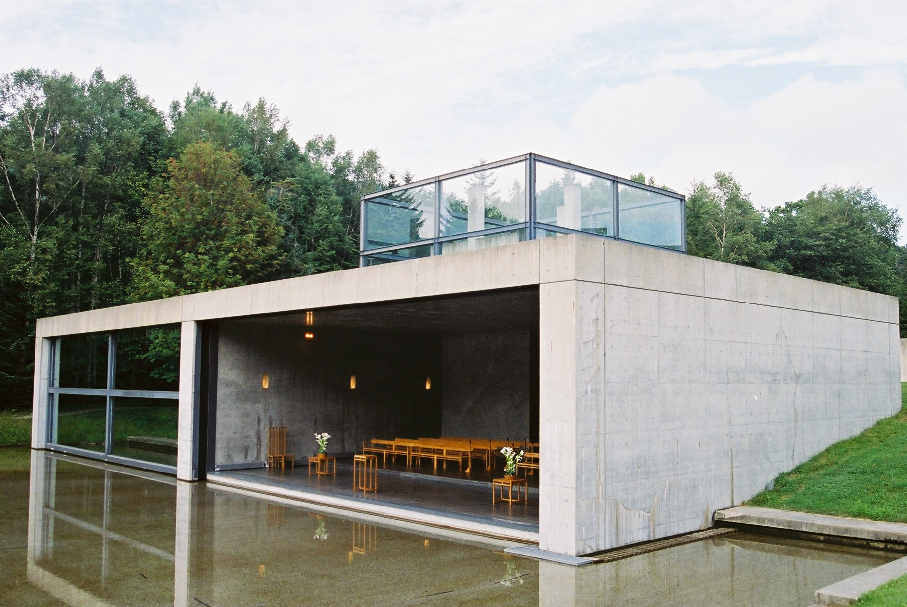

很多人第一次看安藤忠雄，会先记住“清水混凝土”。但真正打动人的，往往不是混凝土，而是他让光、水、路和沉默变成了空间里的主角。
这就是今天想用更轻一点的方式聊的事。我们不先讲建筑流派，也不急着背术语。先问一个普通问题：为什么有些空间看起来什么都没有，却会让人突然安静下来？
安藤忠雄的答案很直接。他常常把建筑做得像一个克制的容器：墙面很干净，材料很少，路径有一点转折，外面的自然被认真地引进来。你走进去以后，不会被装饰追着看，而会开始注意光线怎么落下，水面怎么反射，脚步声怎么变轻。
所以他的“少”，不是冷淡，也不是贫乏。它更像把音量调低，让真正重要的东西变清楚。光之教堂和水之教堂，就是两个特别适合普通读者进入的例子。

